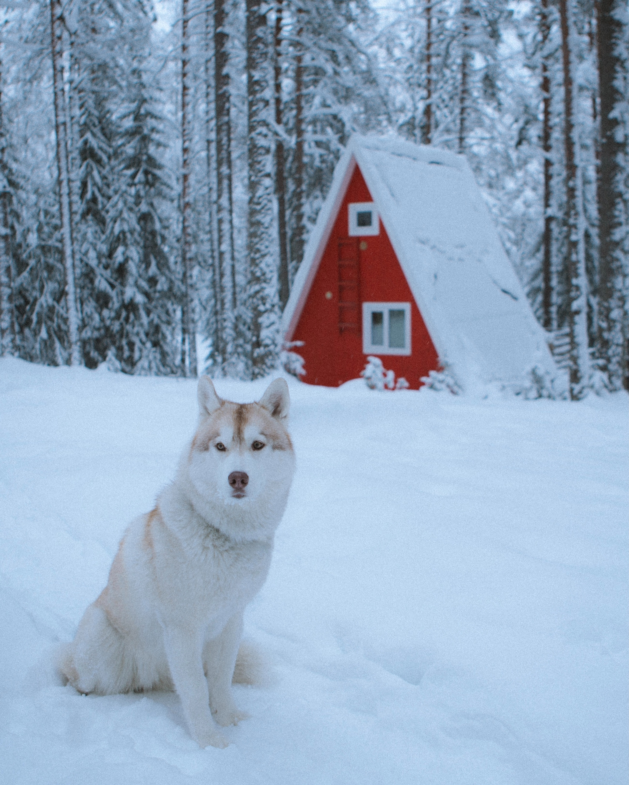
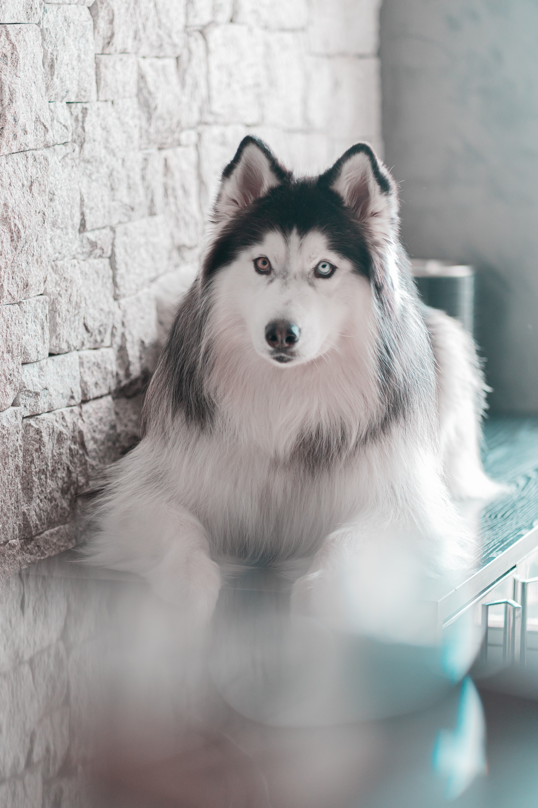
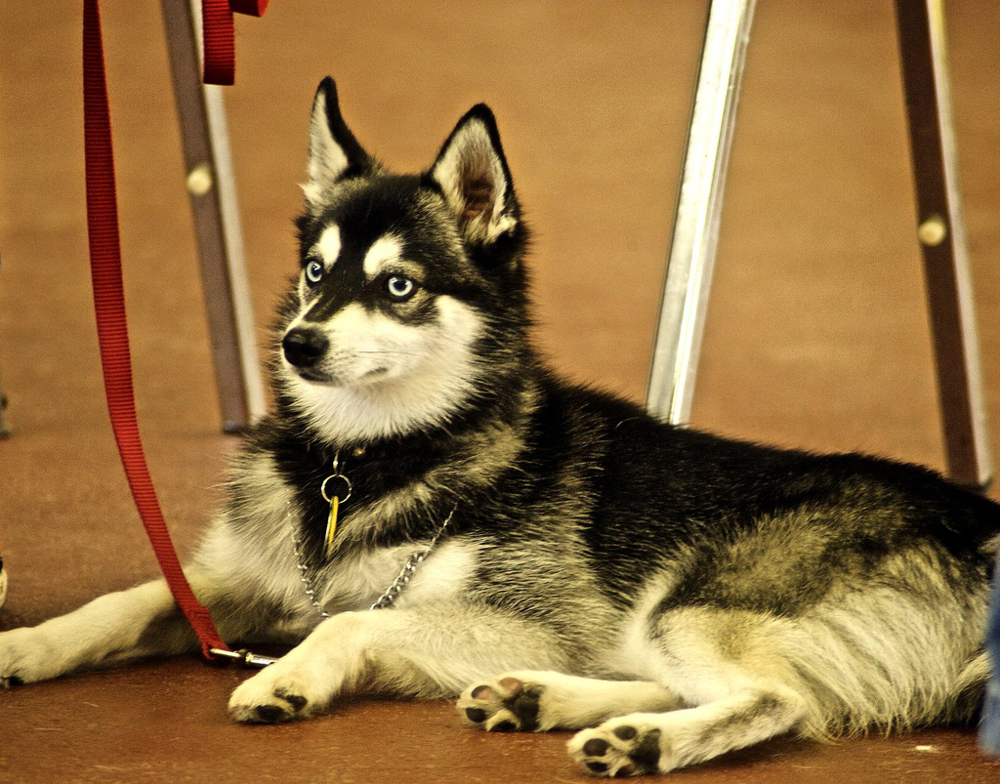
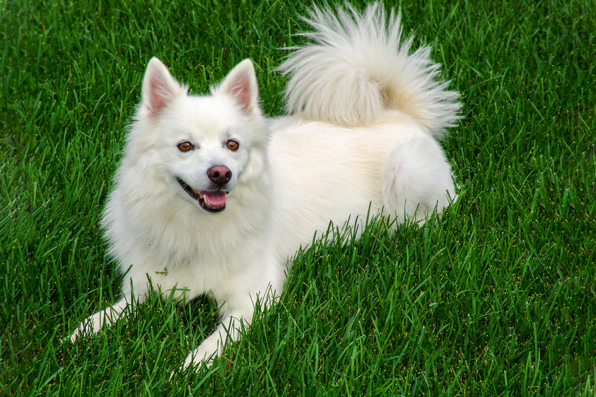
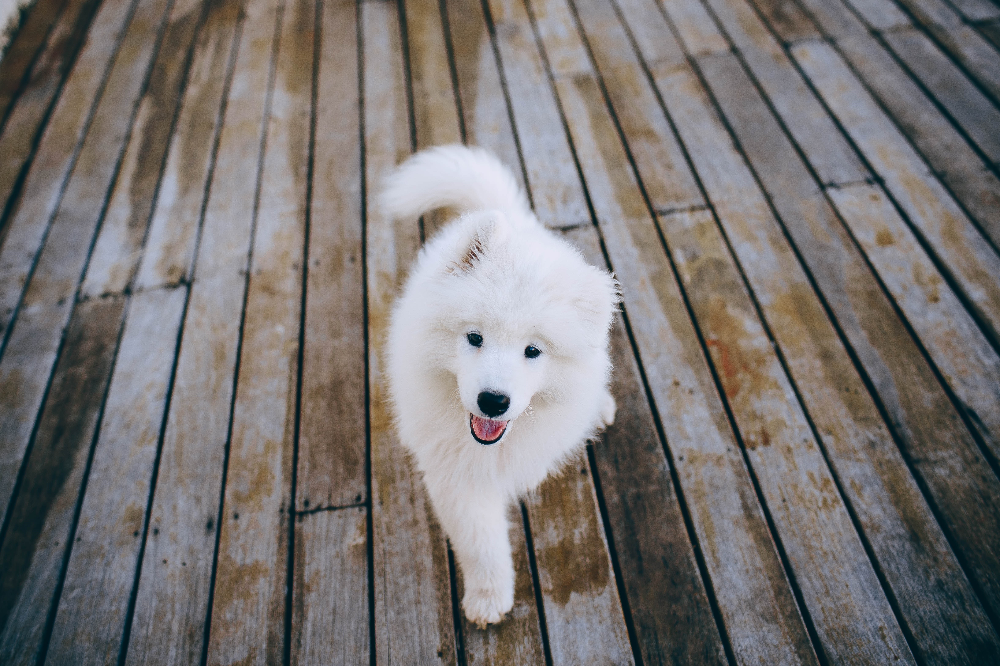
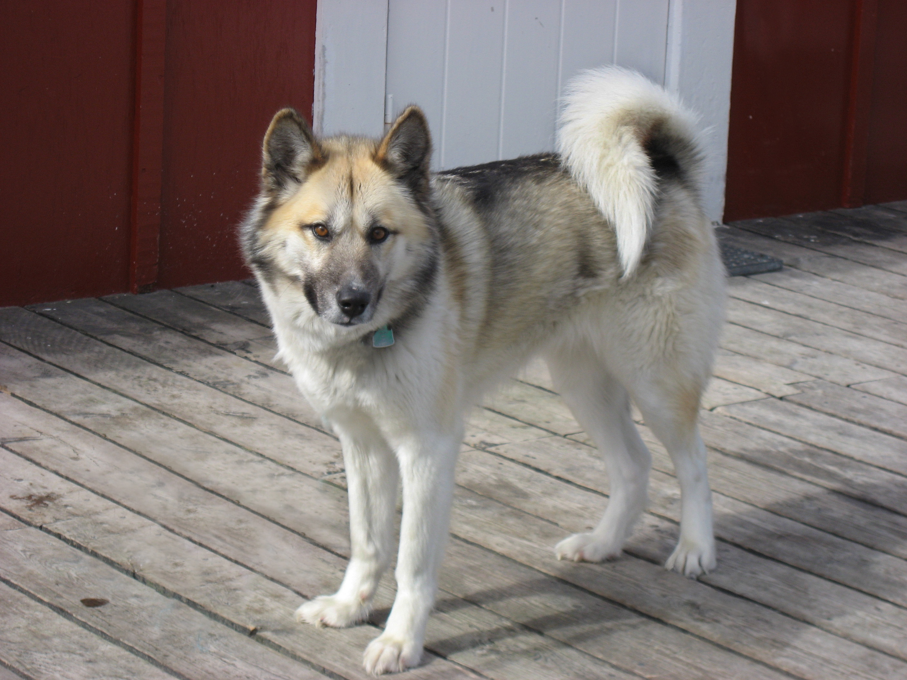

Alaskan Dog Breeds Adoption
Pets for Adoption Near You

5 miles away
- Alaskan Husky
- Female
- 8 years
- Tan and White
- 2 feet
- Healthy
- Up-to-date on vaccinations
- Spayed
- adoption@summitfarms.org

10 miles away
- Alaskan Malamute
- Female
- 10 years
- White and Gray
- 2 feet
- Bloat
- Missed last vaccination
- Spayed
- adoption@summitfarms.org

15 miles away
- Alaskan Klee Kai
- Male
- 5 years
- Black and White
- 1 ft 5 in
- Healthy
- Up to date with vaccinations
- Neutered
- adoption@summitfarms.org

5 miles away
- American Eskimo
- Male
- 9 years
- White
- 1 foot 2 inches
- Mild skin allergies
- Up-to-date with vaccinations
- Neutered
- adoption@summitfarms.org

3 miles away
- Siberian Husky
- Male
- 4 years
- Black and White
- 2 feet
- Healthy
- Up-to-date with vaccinations
- Neutered
- adoption@summitfarms.org

1.5 miles away
- Samoyed
- Female
- 5 years
- White and Cream
- 1 foot 8 inches
- Diabetes
- Up-to-date with vaccinations
- Spayed
- adoption@summitfarms.org

13.5 feet away
- Greenland
- Male
- 6 years
- Tan, Dark Brown, and White
- 1 ft 4 in
- Healthy
- Up-to-date on vaccinations
- Neutered
- adoption@summitfarms.org

20 feet away
- Seppala Siberian Sled dog
- Male
- 5 years
- Sable and White
- 2 ft 1 in
- Allergies, Eye Disease
- Combination vaccine needed annually
- Neutered
- adoption@summitfarms.org
Go to top